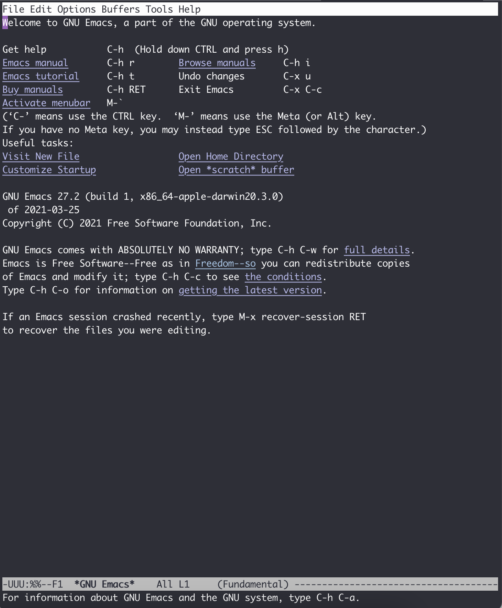

基础操作
本篇介绍 GNU Emacs 的基础知识和操作。本文内容只是让读者初识 Emacs 操作，这些操作需要日积月累的练习才能掌握，本文的后半部分更偏向用于日后查阅；另一方面，很多操作有些繁琐难以记忆，笔者将会在后续介绍一些插件能够极大改善这些问题，因此读者如果遇到晦涩的地方不必过分担心，也不用死记硬背。
文章的结尾附上了本文出现的快捷键及其命令名，供读者查阅。
另外不要忘了官网的 Emacs Reference Card：即 Emacs 备忘表（Cheatsheet）。前两个 PDF 是基本内容，一个是基本操作卡片，另一个是更为简洁的“生存卡片”。可以打印出来放在一边。
安装
截止本文更新日期（2022.4.6）Emacs 的稳定版本为 28.2。建议使用新一些的版本，最好是 Emacs 26 以上，因为一些插件需要 Emacs 更高版本的支持。
特别的，Emacs 28 版本新增使用 GCC JIT 对 Emacs Lisp 字节码的执行进行加速，可以显著提高 Emacs 的运行速度。推荐大家安装最新的版本。
图形界面在官网下载安装包进行安装。
此外还可以用正常包管理工具来进行安装。
macOS:
1$ brew install emacs
Debian/Ubuntu:
1$ sudo apt-get install emacs
稍老一些的 Ubuntu 可能不能直接这样安装最新版本的 Emacs，需要自行去下载最新版本安装包安装。
其它系统类似，安装操作网上资源较多，在此不做赘述。
启动
图形界面可以直接打开程序。命令行输入命令启动 Emacs。
1$ emacs
如果想要打开非图形界面版的 Emacs，输入：
1$ emacs -nw # no window system
如果后面接文件名，则可以直接打开相应文件。
启动后可以看到这样的界面，可以看到其中有一个 "Emacs tutorial"，如果读者英文不错，可以直接点击进入，进行互动入门教程，跳过本篇教程。

对于 macOS，如果是用安装包手动安装的，直接输入 emacs 命令无法启动图形界面程序，也可以在命令行里添加一个 alias：
1alias emacsx="open -a /Applications/Emacs.app/ $1"
之后就可以用 emacsx 命令启动图形界面了。当然，读者可以换成更短的名字，比如 emx。但其实还是推荐用 Homebrew Cask 来安装。
退出程序的方法请见最后的附录。
关于键盘操作
为什么大量使用快捷键？
Emacs 作为一个在图形界面诞生之前就存在的编辑器，其打设计之初就根本不需要鼠标来进行操作，那么直到今天，真正流畅的编程其实也最好不要引入过多的鼠标操作，越是常用的操作就应当更多地使用键盘而不是使用鼠标。鼠标是低效的，读者可以把手放到键盘上正常打字的位置，如果你现在忽然要使用鼠标来进行文本的选择，那右手（对于大部分人来说）就要立刻拿开，摸到鼠标、找到光标、移动到合适的位置、微调鼠标定位、选中、手放回原位。这么长的操作只是为了选中那么一点文字，而这又是如此常见的需求，这种操作模式会打断码代码的手部连贯性和头脑思绪的连贯性。
快捷键的出现就是用来弥补这一不足，通过简短的按键来完成一些复杂的任务。而 Emacs 一不做二不休，直接将快捷键用到极致——所有操作都最好用快捷键。这样一来，程序员会比较辛苦，需要记忆繁多的快捷键，但一旦形成了肌肉记忆，将能得到极高的效率。
需要提前说明的是，快捷键是一个十分自由的配置，你可以根据你自己的需要任意修改，笔者会给出一些笔者实践中的经验，但读者不必也不需要完全仿照，一切根据自己的习惯和需求来。
功能键
Emacs 中有五个功能键： Control、 Meta、 Shift、 Super、 Hyper。其中部分名称读者可能不熟悉，那是几十年前的键盘上的按键名称，其中的 Hyper 键更是在现代键盘上消失了。那 Meta 和 Super 又是什么呢？ Meta 对应于普通 PC 键盘上的 Alt 键，Mac 电脑上的 Option 键。 Super 对应 PC 键盘上的 Win 键，对应 Mac 电脑上的 Command 键。那么我们知道， Super 键在现代系统中起到了重要作用，因此 Emacs 平常不使用和 Super 键相关的快捷键，Emacs 的绝大多数快捷键都是使用 Control 和 Meta 键，而其中一大部分都是只使用 Control 键。
Hyper 键已经消失了，但是 Emacs 依然可以使用这个功能键，例如如果读者手上的键盘有一些不常用的按键，可以考虑设定为 Hyper 键，拓宽快捷键，这部分读者自行探索吧。
事实上 Emacs 中也有 Alt 键，但现在键盘上的 Alt 键都是被映射为 Meta，Alt 键也几乎不去使用了，为避免混淆就没有放到正文中介绍。
Control 键是 Emacs 程序员键盘的“重灾区”，按 Control 键的小指也是 Emacs 程序员最易出问题的部位，因此笔者强烈建议，在你正式使用 Emacs 后改变键盘键位保护手指。
例如笔者将 Control 键改到了大小写锁定键上（读者可以调换两个键，但考虑到实际很少用大小写锁定键，笔者索性不要大小写锁定键了）。也可以将 PC 键盘上的 Win 键、Mac 键盘上 的 Command 键与 Control 调换，这样使用强壮的大拇指也没有问题。如果不想全局改变，也可以只在 Emacs 内部进行，后面会提到。
笔者作为 Mac 用户，推荐一款改键软件 Karabiner-Elements，它甚至可以将 Emacs 常用键位完全拓展到全局。
在 Emacs 中，我们经常需要自定义快捷键，那么需要一种方式来表示快捷键，这样才能写到配置文件里。Emacs 使用一个单独的字母表达功能键，见下表。
| Emacs 功能键 | 缩写 | 对应键盘按键(PC/Mac) |
|---|---|---|
| Control | C | Ctrl / Control |
| Meta | M | Alt / Option |
| Shift | S | Shift / Shift |
| Super | s | Win / Command |
| Hyper | H | 无 |
Emacs 用连字符表示“同时按下”。例如，我们用 C-a 表达“先按下 Control 键不要松，再按下 a 键“。 C-x b 则表达“先按下 Control 键不松，按下 x 键，松开这两个键，按下 b 键”。
C-S-<mouse-1> 表达“同时按下 Control 键和 Shift 键，然后鼠标左键点击“。这里提到了鼠标是因为 Emacs 图形界面支持鼠标操作，并且在有些场景下的确使用鼠标更为方便（例如无规律的多光标选择）。
特别的， Meta 键做前缀有两种按法，例如 M-x 可以“按住 Meta 键不要松，再按下 x 键“，也可以“先按一下 Esc 键松开，再按一下 x 键“。后者是为了在应对无法使用 Meta 键的硬件或系统，但实际操作有很多不便。因此读者尽可能使用 Alt / Option 作为 Meta 键来按。
Option 键作为 Meta 传入，但只需打开它的偏好设置，其中 ”Profiles - Keyboard“ 中有一项“将 Option 用作 Meta 键“，勾选即可。iTerm2 同理。
Emacs 命令
在介绍具体的快捷键之前，要先说明 Emacs 的主体逻辑。与其它编辑器类似，Emacs 也是通过命令进行交互的。而所谓命令，就是 Emacs 中使用 Elisp 语言定义的一些函数。这些函数可以完成一些功能。例如，即使是最最简单的“将光标上移一行”，也对应着命令 previous-line 。一切操作都对应一个命令，而快捷键的本质是在调用这些命令。
对 Emacs 输入命令需要先按下 M-x，此时你会看到 Emacs 最下面的空行上出现了 "M-x "，然后等待你的输入，随后你便可以输入一个函数名。这一快捷键可以说是最重要的一个快捷键了，只要有它，即使你忘记了其它快捷键，也可以输入函数名进行调用。
命令名的传统是有连字符连接的多个有意义的英文单词。在输入时可以用空格代替连字符。也可以使用 <tab> 键自动补全。
M-x 也对应着命令 execute-extended-command。
基础快捷键
接下来介绍一些入门基础内容。读者最好打开一个文本进行尝试，例如前面提到的 Emacs 内置教程，如果不知如何打开，请按下 C-h t （注意松开 Control 键和 h 键之后再按 t 键）。或者读者打开任意一段代码。
如何退出
退出程序： C-x C-c。
对于输了一半的命令，或者按了一部分快捷键但不想继续了，可以按下 C-g 放弃。此外在任何场合如果出现了卡住等情况，也都可以尝试输入 C-g 打断。
光标移动
光标移动也需要教？是的，Emacs 快捷键甚至连方向键都绑定了快捷键。如此大费周章是由于方向键在键盘上处于非常偏的位置，按方向键时你的右手需要做移动，而按方向键又是常见操作，Emacs 认为这种程度的手部移动就已经在打断写代码的连贯性了！
于是，方向键上下左右的快捷键是 C-p、 C-n、 C-b、 C-f。它们的英文含义分别是：previous（前）、next（后）、back（退）、forward（进）。一开始看的确很奇怪，但熟练之后确实方便顺手。
除此之外，Emacs 提供了多种方式进行光标移动：
以词为单位： M-b 光标向左移动一个词， M-f 光标向右移动一个词。
首尾：
行： C-a 光标移至行首， C-e 光标移至行尾。而代码经常是有缩进的，但 C-a 会直接移动到整个行首，并不能直接编辑开头的文字，这种情况可使用 M-m 来移动到文字的开头。不过这里只是介绍，笔者之后会直接推荐一个插件 mwim，避免这个琐碎的小区别。
句子： M-a 光标移至句首， M-e 光标移至句尾。
整个文件： M-< 移动到文件开头， M-> 移动到文件末尾。注意这里需要同时按下 Meta 键、 Shift 键和逗号/句号键。
窗口：M-r 按第一次——光标移动到窗口中间行；接着按第二次——光标移动到窗口最上面一行；接着按第三次——光标移动到窗口最下面一行。
笔者平日使用 mac 电脑，macOS 本身就有着近乎全局的这套 Emacs 快捷键，因此笔者平日很少按方向键，全部使用这四个快捷键。读者需要大量练习，形成肌肉记忆。
M-` 调用 tmm-menubar，按 t 选择 Tools，按 g 选择 Games，按 s 选择 Snake，然后开始游戏吧！
编辑操作
删除字符：删除一个字符与正常一样，按下删除键（在 Emacs 中删除键写为 <DEL> 或 <backspace>）即可删掉光标左侧的字符。如果想要删掉右侧的字符，就按下 C-d 键。
移除词：M-d 移除光标右边一整个词。M-<DEL> 移除光标左侧一整个词。
移除右侧直到句子结尾： M-k。
移除右侧直到行结尾： C-k 。
选中部分区域（region）：把光标移动到某处，按下 C-SPC （ SPC 表示空格键，space），此时 Emacs 最下方的空行显示 “Mark set“，表示当前打了一个标；接着任意移动光标到另一个位置，可以看到半透明的选择框。这就是和平日里你使用鼠标进行选择是一样的。
复制： M-w 复制选中的区域。
移除： C-w 移除选中的区域。
注意，这里我用了“删除”和“移除“两种说法，”删除“对应于 "delete"，是真的删除，而“移除”对应于 "kill"，相当于“剪切”，之后可以再次插入到其它位置，即 "insert"，相当于粘贴。
笔者的实际使用中，复制比移除更为常见，由于光标的移动等大量操作依赖于 Control 键，因此将复制与移除调换，使用 C-w 做复制，M-w 做移除更为顺手。读者可以根据自己的需要更改，具体配置方法见后续教程。
Emacs 内部维护了一个环形“剪贴板历史”，当你想插入之前移除的内容时（即粘贴之前剪切的内容），按下 C-y，这被称为 "yank"，它会将最近一次移除的内容插入回来。那么如何粘贴历史记录呢？在一次 "yank" 的基础上，再按 M-y ，就可以得到倒数第二次移除的内容，再按一次 M-y 即可得到倒数第三次移除的内容，以此类推。后面笔者会介绍插件 counsel 辅助这个过程。
- 撤销（undo）：
C-/或C-_或C-x u。撤销刚刚的操作。对字符进行编辑例外，例如你按了 5 次删除键删除了 5 个字符，按一下撤销即可复原。 - 重做（redo）：Emacs 对于历史记录也维护成了一个环。但 Emacs 并没有直接的重做操作，而是先按一下
C-g，即没有操作，此时再按撤销键时，会撤销上次的“撤销”，相当于重做；也可以理解为按下C-g后这个环的移动方向会改变。所以 Emacs 其实不分 undo 和 redo，而是靠改变历史记录的移动方向来控制。那么读者一定觉得这里难以理解不便使用，没错，因此笔者将会在后面介绍更好用的插件undo-tree。
标记与跳转
上文提到的选中键 C-SPC 不仅是选中文本这么简单的功能，它的本质是设定一个标记（mark）。Emacs 还有一个标记跳转功能，例如我们先在文本的第一行，按下两次 C-SPC（这样我们即打了标记，又没有选中文本），然后光标移动到别的位置（甚至以后学过之后，到别的文件），这时候按下 C-x C-SPC 或 C-u C-SPC，即可立刻跳转回刚刚的位置。同样的，有更好用的插件可以辅助这一功能即上文提到的 counsel。
想要跳到特定的行，M-g M-g 加行号、回车即可 。
重复操作
Emacs 提供了一个机制可以把一个命令重复执行任意次数。具体来说，先按下 C-u，再按数字表示次数，再按下命令的快捷键。例如：C-u 12 C-n 表示向下 12 行。如果不加数字，默认是 4 次。
M-x 组合时表示传参。读者暂不需要知晓这么深刻。
页面移动
C-v 会向下翻滚一页内容， M-v 会向上翻滚一页。但 Emacs 会保留三行不会被翻过去，这样看起来更为舒服。
C-l 第一次按时，会移动页面使得光标所在行在窗口中央。这样当我们写文本写到下面时，只需要按一下 C-l 即可把当前光标所在行移动到正中央，有利于查看。但如果按完一次之后紧接着再按一次 C-l，会移动页面使得光标所在行在窗口最上面，而按第三次 C-l 会移动页面使得光标所在行在窗口最下面。第四次按与按一次的效果相同，如此循环。
搜索文本
从光标位置向下搜索，按下 C-s，即 search，此时最下方空行会出现 "I-search: "，输入你要搜索 的文本，此时会显示出能够匹配的文本，光标会移动到第一个匹配的文本位置。
如果你想让光标跳到下一个匹配位置，就再按一次 C-s。
如果想停留在当前位置，退出搜索，按下回车键。
如果想放弃搜索，回到搜索前的位置，按下 C-g。
从光标位置向前搜索，按下 C-r，其用法与 C-s 一致，只是方向相反。安装了 swiper 的话会显示搜索结果列表，更为直观（swiper 和上文提到的 counsel 是一套插件）。
其它小操作
交换光标左右的字符：C-t ；交换光标前后的词：M-t；交换光标所在行和上一行：C-x C-t。还有交换句子、段落、选择区域等，但没有快捷键，详见文档。
在光标所在行下方创建一个新的空行：C-o；将光标所在前后所有连续空行变为一个空行：C-x C-o。
将光标后一词变为小写：M-l；变为大写 ：M-u；变为首字母大写：M-c。
获得帮助
Emacs 内置了多种获取帮助的方式。其共有前缀 C-h。
简要描述快捷键功能：按下 C-h c 后，按想查询的快捷键。例如 C-h c C-p，会在最下面出现："C-p runs the command previous-line"，告诉你 C-p 键对应的命令是 "previous-line"。
详细描述快捷键功能：按下 C-h k 后，按想查询的快捷键。
描述函数（function）： C-h f，输入函数名。
描述变量（variable）： C-h v，输入变量名。
列出含某一关键词的命令（Command Apropos）： C-h a，加一个关键词。
列出含某一关键词的符号的文档： C-h d，加一个关键词。
这些帮助太多了记不住？还有帮助的帮助：
C-h ?，列出以上功能，以及其它帮助功能。
有一个小插件 which-key 可以在敲快捷键给予一定的提示作用，后续会详细介绍。
命令列表
| 操作描述 | 快捷键 | 命令名 |
|---|---|---|
| 输入命令 | M-x | execute-extended-command |
| 退出程序 | C-x C-c | save-buffers-kill-terminal |
| 放弃当前输入 | C-g | keyboard-quit |
| 光标向上一行（方向键上） | C-p | previous-line |
| 光标向下一行（方向键下） | C-n | next-line |
| 光标向左一个字符（方向键左） | C-b | backward-char |
| 光标向右一个字符（方向键右） | C-f | forward-char |
| 光标向左移动一个词 | M-b | backward-word |
| 光标向右移动一个词 | M-f | forward-word |
| 光标移至行首 | C-a | move-beginning-of-line |
| 光标移至行尾 | C-e | move-end-of-line |
| 光标移动到一行缩进的开头 | M-m | back-to-indentation |
| 光标移至句首 | M-a | backward-sentence |
| 光标移至句尾 | M-e | forward-sentence |
| 光标移至文件开头 | M-< | beginning-of-buffer |
| 光标移至文件结尾 | M-> | end-of-buffer |
| 光标移动至窗口的中间、最上、最下 | M-r | move-to-window-line-top-bottom |
| 删除光标右侧字符 | C-d | delete-char |
| 移除光标右侧词 | M-d | kill-word |
| 移除光标左侧词 | M- | backward-kill-word |
| 移除右侧直到句子结尾 | M-k | kill-sentence |
| 移除右侧直到行尾 | C-k | kill-line |
| 设置标记以选择区域 | C-SPC | set-mark-command |
| 复制区域 | M-w | kill-region-save |
| 移除区域 | C-w | kill-region |
| 插入已移除文本 | C-y | yank |
| 插入历史移除文本 | M-y | yank-pop |
| 撤回 | C-/ 或 C-_ 或 C-x u | undo |
| 跳转到上一标记 | C-x C-SPC 或 C-u C-SPC | pop-global-mark |
| 跳转到行号 | M-g M-g | goto-line |
| 重复 | C-u | universal-argument |
| 向下一页 | C-v | scroll-up-command |
| 向上一页 | M-v | scroll-down-command |
| 移动页面使得光标在中央/最上方/最下方 | C-l | recenter-top-bottom |
| 向后搜索 | C-s | isearch-forward |
| 向前搜索 | C-r | isearch-backward |
| 交换前后字符 | C-t | transpose-chars |
| 交换前后词 | M-t | transpose-words |
| 交换前后两行 | C-x C-t | transpose-lines |
| 在下方新建一行 | C-o | open-line |
| 删除连续空行为一个空行 | C-x C-o | delete-blank-lines |
| 将后面的词变为小写 | M-l | downcase-word |
| 将后面的词变为大写 | M-u | upcase-word |
| 将后面的词变为首字母大写 | M-c | capitalize-word |
| 放大字号 | C-x C-= | text-scale-adjust |
| 缩小字号 | C-x C-- | text-scale-adjust |
| 重置字号 | C-x C-0 | text-scale-adjust |
| 简要描述快捷键功能 | C-h c | describe-key-briefly |
| 描述快捷键功能 | C-h k | describe-key |
| 描述函数功能 | C-h f | describe-function |
| 描述变量 | C-h v | describe-variable |
| 列出含某一关键词的命令 | C-h a | apropos-command |
| 列出含某一关键词的符号的文档 | C-h d | apropos-documentation |
| 帮助的帮助 | C-h ? | help-for-help |